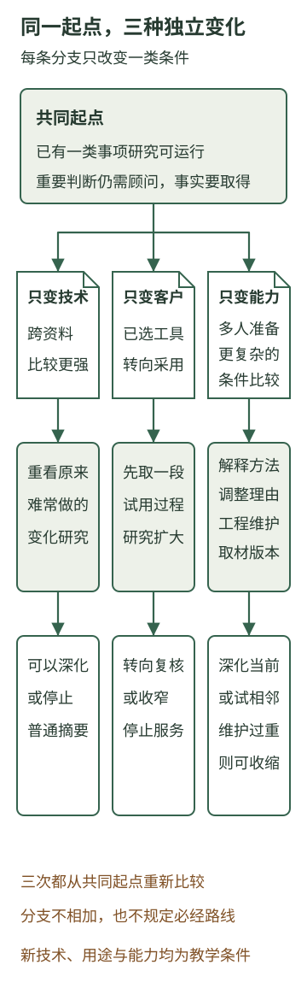

为什么没有一次完成的AI转型
本章内容
咨询公司已经能组织一类事项研究，也能把模型、专业人员和工程投入放进完整任务中比较。下一轮有明确目标、有限资源和可以检查的产物。做到这里，是否就能把这套安排视为AI转型的完成状态？
阶段工作当然可以完成。一次取材、方法修订或限定服务，都应该有结束的依据。会继续变化的是这些工作的经营理由：技术能承担的劳动在变，客户需要的帮助在变，企业自身能组织的工作也在变。今天合理的安排，可以成为下一轮的基础，却未必仍是下一轮最值得维持的组合。
以下沿用咨询公司的教学情境，从同一个起点分别改变三类条件。每条分支单独讨论，不把不同变化合并成一段已经发生的成长史。
一、先看清我们从什么地方出发
共同起点是：公司已经能围绕一类未决事项，取得材料、准备研究、处理重要取舍并交付采用版本。设备客户的一段原工作记录已经回来，帮助团队更准确地理解适用性确认。它提供了局部认识；后续客户怎样使用工具、每次条件变化产生什么后果，仍需取得相应事实。
公司的方法也有了可用起点，例如区分计划与完成、把资料对应到适用对象。但重要判断仍需要顾问参与，多人接续与方法维护还有投入。第11章讨论的另一位老客户，则要另看他是否提供了记录和接手人，不能因为前一位客户配合过，就认为所有新委托都具备条件。
这个起点使公司有理由继续，却没有预先规定下一步必须扩大。深化现有研究、转向另一种帮助、暂缓一个服务方向，都要解释新增条件怎样改变了工作。
二、只改变技术：原来负担过大的帮助，可能重新值得做
先保持客户任务、可取得的资料和企业人员条件不变，只增加一项技术假设：出现了更适合跨多份、不同版本资料作条件比较的能力，在同样研究要求下，准备这类比较的负担降低了。这里讨论的是一种可能变化，不指某个已经发布的模型。
原来，团队可以研究一个明确范围，却很难经常比较一组相关变化。客户提出改装安排时，顾问要恢复产品说明、设备范围、完成依据与原建议的关系；涉及多组资料，就要花更多时间重新整理。公司因此可能把帮助限定在少量事项，另一些跨资料的变化研究暂未承接。
如果新能力能把这些对应准备得更可靠，公司就可以重新考察那部分原来不容易经常提供的帮助。例如，围绕客户已经给出的变更材料，先准备一份影响对照：哪些已有判断仍成立，哪些对象需要重新确认，什么记录到达后才值得改变建议。顾问检查关键关系，研究员据此继续取材。
变化发生在劳动上。模型更有能力参与跨材料组织，可能减少顾问反复恢复关系的准备，使原来只值得为少数事项承担的研究，有机会用于更多相关变化。公司的客户认识和比较方法仍有用途，但它们现在能够通过另一种资源组合发挥作用。
这也可能削弱原有差异。如果客户内部已经有目的明确、资料齐全的研究人员，普通产品摘要越来越容易自行取得，咨询公司仅靠“读过更多消息、写得更完整”维持原服务，就需要重新说明价值。技术同时改变了企业能提供什么，以及客户还需要外部提供什么。
公司可以据此选择深化：先用原来负担较重的一组材料，观察新能力是否真的减少了专业重建，以及分析能否在客户需要的时点使用。也可能停止为普通摘要维持一套高投入的专门安排，把相关方法保留到其他研究中。
不过，技术变化必须作用于重要环节。若主要等待仍是客户不能取得完成记录，或顾问只在固定时点作决定，跨资料比较变强就没有解决这项阻塞。更强能力提供了新选项，是否值得改变路线，仍要沿整项工作比较。
三、只改变客户任务：原服务做得更好，也可能偏离需要
现在回到共同起点，保持原技术和企业能力不变，只改变客户下一步要完成的工作。假设这位设备客户已经选定一类工具和尝试方向，近期不再频繁比较“选什么”，转而需要判断“怎样让已选方案进入服务工作”。
此前的研究可以帮助选择观察范围，现在仅继续发送产品变化和选型建议，就可能反复回答一个已经解决的问题。客户要了解的，变成了新人实际怎样使用、专业人员仍在哪一步参与、哪些任务没有进入新安排，以及是否适合扩大。
取材目的随之变化。产品原文仍有参考作用，决定建议的材料却更多来自试用过程：实际处理过什么问题，哪些答复需要重做，服务人员为什么绕回旧流程，负责人如何使用这些观察。咨询公司需要先取得这类材料，才能研究采用条件。
原有方法有一部分可以沿用。还原一段工作、分清事实与推断、比较不同解释，仍能帮助团队认识问题。但“曾帮助客户选择工具”并不自动使公司具备组织采用的全部能力。岗位安排、专业确认与实际执行仍由客户承担，涉及新的责任和专长，也要另作安排。
一种有理由的转向，是先围绕一段已发生的试用，准备“继续扩大、调整范围或暂缓”的研究，而非立即承诺包办组织改变。客户若能提供过程记录，并有人用研究作下一步选择，这项帮助就有了可尝试的位置。
如果客户没有相应记录，也没有承担采用的人，团队可以先收窄为取材与条件调查。如果客户内部已经能够完成这项分析，外部服务也可能在选型研究结束后停下。保留原有方法与材料，不妨碍结束已经不再需要的持续服务。
因此，服务方向的修订可能发生在技术没有变化的时候。决定它的，是客户的任务已经向前推进。过去交付得好，是下一次理解的起点，不能代替对新用途的判断。
四、只改变自身积累：同一项技术，可以支持不同的企业安排
第三次仍从共同起点出发，保持技术与客户任务不变，只增加一个企业能力条件：更多研究员能够独立准备较复杂的条件比较，并解释调整方法的理由，内部工程人员也能够维护相应的取材与版本联系。
这种变化与多存了几份报告不同。新研究员接到一项变更，不必让顾问从头恢复全部背景，就能指出影响对象、取得当前依据，并把真正需要讨论的取舍准备出来。工程人员知道为什么要按任务读取相应版本，也能解释一项修改会影响哪些研究。
公司因此多了一种发展选择。原顾问可以把部分注意力用于相邻问题，研究员可以接续既有事项，而不必让每次新尝试都中断原有服务。例如，团队可以比较怎样把已会做的适用性研究用于另一类资料变更，先辨认哪些方法相同、哪些事实和专业判断需要重建。
这里的起点来自积累，迁移仍有条件。原来设备配置的识别方法，不能直接替新领域确认专业事实；原来能够读取的资料，也未必覆盖新对象。共同方法帮助团队更早看见差别，可复用工具减少部分重复实现，新的适用关系仍要取得。
企业也可能选择先深化当前服务。若已有研究仍有较多任务等待专业取舍，先让多人接续稳定范围、减少反复解释，可能比立即进入新领域更有价值。若整理出的能力维护很重、实际用途很少，也可以缩减相应建设，保留必要依据。
能力增长没有自动增加预算。前章的两周专业时间仍需按实际容量安排，不能因为“团队已经学会”就同时保留所有项目。它改变的是同样一笔投入可能完成什么、由谁承担，以及下一步值得比较哪些选项。
五、共同演进，发生在这些关系的往返中
三条分支分别说明，原路线可以怎样改变。真实企业里，这些条件还会相互作用。

新技术让某类跨资料比较更可行，企业用它做一轮研究，才看见客户真正需要的是决定前的影响分析；实际使用又暴露了哪些事实取得太晚、哪些关系经常误解。团队把这些认识带回方法和实现，下一轮便有了不同的起点。客户也可能因为得到更具体的选择，开始用另一种方式组织材料和讨论。
企业融入AI，需要把当前目的和事实交给它，让专业方法进入取材和分析，并安排研究怎样被采用。技术能力因此进入真实生产，生产又把新的材料缺口、判断难点和使用要求带回实现。两边相互接近后，原来想自动完成的一项动作，可能发展成不同的服务；原来值得建设的功能，也可能失去继续投入的理由。
AI洞察站的局部历史提供了一个可对照的关系：产品要求将专业目标提前到任务和取材，实际生成又推动范围、引用和执行机制的修订。目标组织与工程实现需要往返对齐。它能够支持这种局部解释，完整企业怎样演进，仍要看自身的客户工作与经营条件。
共同演进因而不是一个每家企业都必须登完的等级表。某家公司可能先把稳定任务做得更好，另一家可能更早改变服务，也有企业应停止一项不合适的尝试。阶段成果可以保留，路线需要能够修订。
六、没有统一终点，更需要具体的下一轮
把“转型完成”当作一次系统交付，容易忽略经营理由的变化；只说未来一直在变，又会使今天的工作没有结束标准。企业可以用更具体的目标处理这两者。
在技术分支中，一轮工作可以限定为：用已有一组复杂材料比较新安排，查清专业劳动与采用条件有没有变化。在客户任务分支中，可以先取得一段试用过程，形成扩大或暂缓的理由。在内部能力分支中，可以让另一位同事完成一项条件不同的研究，检查接续究竟成立到哪里。
这些目标各自能完成，也能产生下一轮选择的依据。某项假设不成立，就撤回相应承诺；可用的方法与工程继续保留。原来完成的数字化、研究助手或一段AI生产，成为可继续使用和改变的基础，而非必须推倒重来或永远维持的终局。
路线能够修订，还需要有人持续理解企业、判断新可能，并把选择做成工作。如果每次都重新找人恢复全部背景，企业可能知道应该改变，却始终难以推进。下一章要讨论，怎样让这股主动发展的力量在长期合作与企业内部同时成长。
来源与延伸
专业目标前置与后续实现修订的局部历史，来自AI洞察站自主日更产品约定及生成主链维护说明。它们没有提供本章三类变化的真实企业经营结果。
可复用组件与新业务条件需要分别判断，以及旧优势可能随条件改变，可对照旧第18章的教学讨论。本章重新建立咨询情境，技术进展、客户任务与内部能力变化均为条件推演，没有沿用旧设备公司的数字或将未来能力写成已发布事实。